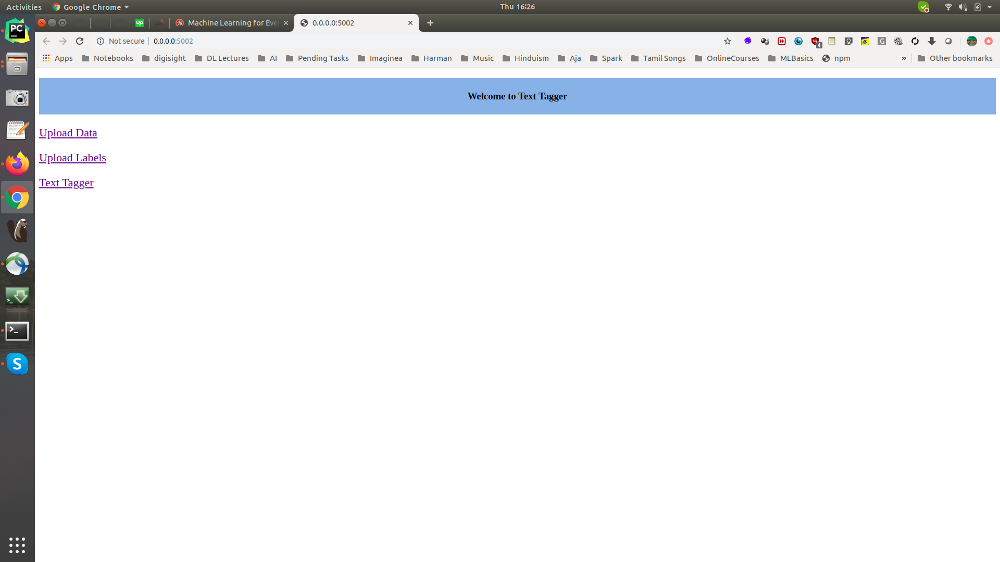

Streaming ML Classification with Active Learning Model¶
A must read theory on Architecting a Machine Learning Pipeline
In this use case we are gonna build ground up dataset from scratch from live streaming data.
Use programmatic methods to tag dataset, create golden dataset for ML training, in an iterative manner till we are satisfied with model performance.
Build model and evaluate it on golden dataset
Deploy the model, classify the text
Extract the web links from tweets and store the urls
Implementation¶

1. Data Collection:
Tweets -> Twitter Stream -> Tweepy -> Kafka Producer -> Kafka Stream -> Spark Structured Streaming Consumer -> Postgresql as one single raw data table
2. Data Labelling and Splittling
Posgresql -> Raw Dataset Table -> Split -> Train/Test/Dev/Snorkel dataset tables -> SSPLabeler(Snorkel Labeler) -> Labelled Train/Test/Dev dataset on Postgresql
Labelled Train/Test/Dev dataset on Posgresql-> Mannual UI Tagger -> Train/Test/Dev dataset with golden label column on Posgresql
3. Model Training
Labelled Train/Test/Dev dataset -> DL Model -> Model Store
4. Prediction on Live Stream
Model Store -> Tensorflow Serving -> TF API End Point
Tweets -> Twitter Stream -> Tweepy -> Kafka Producer -> Kafka Stream -> Spark Structured Streaming Consumer -> UDF(TF API End Point) -> Filtered AI Tweets -> Postgresql
5. Dashboard
Postgresql -> Flask API -> Dashboard
Dataset¶
We are interested to collect tweets that talks about Artificial Intelligence / Data Science in general.
Dataset creation involves:
Observer the Tweets
Sample relevant tweets, with possible false positive data (i.r irrelevant tweets)
Dataset of format
parquetwith text column and label column. (parquet nicely packs special characters without the headache os parsing the CSV files)Data splits
creates dataset @ data/dataset/ssp/original
| File Name | Records | Info | Columns |
|---|---|---|---|
| ssp_tweet_dataset.parquet | 30K+ | Full Raw Dataset | ['created_at', 'text', 'source', 'expanded_url', 'media_url_https'] |
| ssp_train_dataset.parquet | 27K+ | Train Data | ['created_at', 'text', 'source', 'expanded_url', 'media_url_https'] |
| ssp_LF_dataset.parquet | 1000 | Snorkell Dataset | ["id", "text"] |
| ssp_test_dataset.parquet | 1000 | Test Data | ["id", "text"] |
| ssp_val_dataset.parquet | 500 | Validation Data | ["id", "text"] |
Labeling¶
Tagger
Mannual annotation plays a major role in ML pipeline, where humans needs to infuse domain information in to ML model.
Though there are more advanced tools like https://prodi.gy/, I wanted to keep things tiddy and simple, so a web tool has been put in place to get a hands on experience in tagging with respect to text classification.
bin/tagger.shIn this tool, you can: - Upload multiple CSV/Parquet(preffered) data files with columns [id, text] and corresponding CSV lable files with columns [lable, index] - Tag each of the data files independently - Download the files (as matter of fact the files lives in your home folder ;) )
Main screen… 
Upload CSV data…

Upload Labels file…

Main Tagger Screen…

Snorkel A semi automated way of preparing the dataset at scale for later use.
How to run?¶
There are two ways of running, that is on docker or on your local machine. In either case, opening the terminal is the difference, once the terminal is launched, the steps are common.
To get a new terminal for our docker instance run : docker exec -it $(docker ps | grep sparkstructuredstreaming-pg | cut -d' ' -f1) bash
Note: We pull our container run id with $(docker ps | grep sparkstructuredstreaming-pg | cut -d' ' -f1)
This example needs three terminals:
cd /path/to/spark-streaming-playground/ # Local machine
cd /host # On Docker 'spark-streaming-playground' is mountes as a volume at /host/
#[producer] Guake terminal name!
bin/data/start_kafka_producer.sh
#[dump data]
#by default 50K tweets (25K AI tweets + 25K False positive) will be collected and dumbed into the table
bin/data/dump_raw_data_into_postgresql.sh
python src/ssp/posgress/dataset_base.py --mode=upload
#[ssp data]
#Reads the table as pandas dataframe, applies naive labelling, prepares the dataset needed for Text classifier and snorkel labelling
bin/data/prepare_ssp_dataset.sh
#[snorkell] # TODO
bin/models/run_snorkel_labeeler.sh
#[tagger]
bin/flask/tagger.sh
#[DL Text classification Model]
bin/models/build_naive_dl_text_classifier.sh
#[Tensorflow Serving]
export MODEL_DIR=/home/mageswarand/ssp/model/raw_tweet_dataset_2/naive_text_classifier/exported/
# test the model
saved_model_cli show --dir ${MODEL_DIR}/1/ --all
# start the serving server
tensorflow_model_server \
--rest_api_port=8501 \
--model_name="naive_text_clf" \
--model_base_path="${MODEL_DIR}"
# [Spark Streaming]
bin/nlp/spark_dl_text_classification_main.sh
References¶
https://towardsdatascience.com/custom-transformers-and-ml-data-pipelines-with-python-20ea2a7adb65
https://towardsdatascience.com/how-to-build-a-complex-reporting-dashboard-using-dash-and-plotl-4f4257c18a7f
https://github.com/ucg8j/awesome-dash